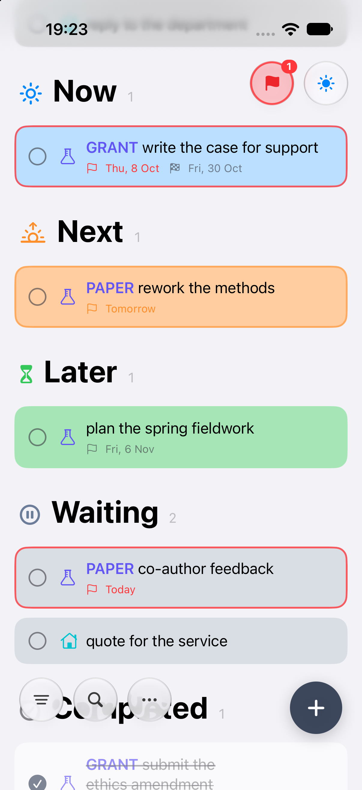
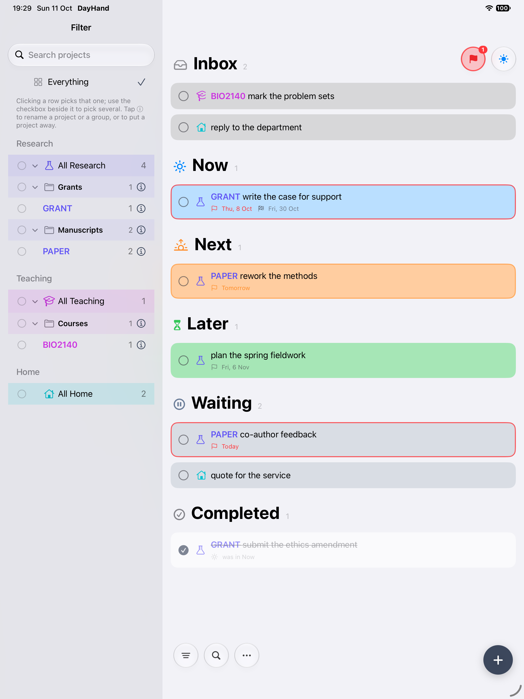

A place for every task
Inspired by Kanban, DayHand adapts the simplicity of cards and stacks to managing your life and work. A stack reflects where a task belongs in your life right now, rather than a day on the calendar.
Inbox
Capture a task before deciding what to do with it. New tasks normally land here, ready to sort when you have a moment. If you already know where a task belongs, choose a different stack as you add it.
Now
What you’re actively working on. A task can stay here for several days or weeks while you move it forward. Now means in progress; it is not a promise to finish everything today.
Next
What you intend to pick up next, once you have room to take it on. Keep your next steps in view without assigning them to tomorrow or making them compete with the work already in progress.
Later
Ideas, plans and tasks you want to keep for the future. You’re choosing not to take them on yet, but they have a place to live until you are ready.
Waiting
Work you cannot move forward until a reply, a delivery, someone’s feedback, or something else arrives. Keep it out of your active work, then decide where it belongs when you can act again.
You decide when a task moves. Time passing changes nothing about its stack. Tick it off when the work is finished, and it goes to Completed.
Dates with a purpose
Most tasks do not need a date. When a date matters, distinguish when you want to think about the task from when it really must be finished.
Reminders: when to think about it
Choose a day to bring a task back to your attention — to start work, reconsider an idea, or follow up on something in Waiting. A notification and a coloured edge help you notice it. Snooze or clear the reminder when your plans change; the task stays where you put it.
Deadlines: when it must be finished
Add an optional deadline alongside a reminder for a real commitment: a submission, a renewal, a delivery. It is shown on the task as a finish date. The reminder handles notifications and the coloured edge; the deadline does not send a separate alert or move the task.
Neither date chooses a stack, moves a task or marks it completed. A task can stay in Now all week, with a reminder on Monday and a deadline on Friday.
The journey of a task
You’re asked to prepare a presentation for Friday. It is one task, even when priorities change and the work takes several days.
- MondayCapture “Prepare the presentation”, with a reminder to start Tuesday and a deadline of Friday. Inbox
- TuesdayThe reminder brings it back to your attention. You decide to start and move it to Now. Now
- Later that daySomething more urgent needs your attention. Put the presentation aside and set a reminder for Wednesday. Later
- WednesdayThe reminder prompts you to pick it up again. Move it back to Now and continue the same task. Now
- ThursdaySend the draft to a colleague. You need their feedback before you can finish; set a reminder to follow up on Friday. Waiting
- FridayFollow up when reminded. The feedback arrives, and you move the task to Now for the final changes. Now
- FinishedDeliver the presentation on Friday and tick off the task. The deadline is met. Completed
One task throughout. Its Friday deadline never changed. Reminders brought it back to your attention; you chose when to move it. The pauses and the unticked days were part of getting the work done.
Keep related work together
Projects for a shared purpose
Keep the tasks for a trip, a course, a client or a piece of work together. Start a task with a name such as HOLIDAY and accept the project offered below the field, or choose one from the project button. Each task can have one project, shown as a coloured prefix.
Categories for the parts of your life
Separate broad areas such as Work, Home and Courses with your own labels, icons and colours. A project supplies a starting category for its tasks; you can also give a task a category without assigning it to a project.
Groups for related projects
Gather projects into groups such as Clients, Courses or Holidays. Rename and reorganise them from the Filter. When a project is finished, archive it and keep its tasks available for reference.
Find your focus
Search task titles, project names and group names. Filter by any mix of categories and projects, or pick a whole group. Show projects with open tasks, all active projects, or archived ones when you want to look back.
See what you’ve accomplished, over time
A list of things to do is only part of the picture. DayHand also keeps a record of the work you finish.
This week, and last week
Review completed tasks grouped by the day you finished them. See what you got done this week, or look back at last week before deciding what comes next.
The longer view
Browse your all-time completion timeline by month and day, or open a project’s History to see its finished work. Daily counts and simple bars make the pattern of completions easy to see.
Completed tasks remain in the Completed stack, so you can find them again or reopen work that needs another pass.
On iPhone, iPad and Mac


Illustrative beta screens; layout and controls may differ in current builds.
For your life and your work
Architect
Drawings in progress in Now, the next revision in Next, future ideas in Later. A set sent to the client goes to Waiting until feedback arrives. Keep a reminder to follow up and a deadline for the actual submission.
Plumber
Keep jobs you’re working on in Now, upcoming visits in Next, and future work in Later. A job held up by a part or a customer’s confirmation goes to Waiting, with a reminder to chase it up.
Student
Balance assignments, revision and everyday responsibilities. Keep each course’s tasks in its own project, focus on the work in Now, and use real submission dates as deadlines. Group work awaiting a teammate’s contribution goes to Waiting.
Researcher
Keep analysis and writing in Now while manuscripts with co-authors or experiments awaiting data sit in Waiting. Group related studies and grants, and use project history to look back at what you finished over the course of the work.
Web developer
A feature can stay in Now for several days, with the next one in Next and the backlog in Later. Move work blocked by an API key or client feedback to Waiting. Keep the release deadline without repeatedly rescheduling the task.
Home and family
Sorting out insurance in Now, booking a check-up in Next, holiday ideas in Later. A repair awaiting a tradesperson’s quote goes to Waiting. Set a reminder to follow up and keep the actual renewal date as the deadline.
Your tasks stay yours
No account required
Your tasks are stored on your device. There is no DayHand account to create, and you can use the app on one device without setting up sync.
Optional sync through your own file
Choose a shared file in iCloud Drive and select that same file on each device. iCloud Drive carries the file between them; DayHand merges changes when it reads it. Sync is optional and needs a one-time setup on each device.
Backups and a way out
Automatic backups are taken on days you open the app, with three rotating copies kept. Take extra backups by hand, restore an earlier copy, or share one somewhere safer. CSV import and export let you bring tasks in or take them with you.
Try the DayHand beta
Available through Apple’s TestFlight for iPhone, iPad and Mac.
iPhone and iPad
iOS / iPadOS 17 or later
- Install Apple’s TestFlight from the App Store.
- Open the beta link below on your iPhone or iPad.
- Accept the invitation and install DayHand.
Mac
macOS 14 or later
- Install TestFlight from the Mac App Store.
- Open the same beta link below on your Mac.
- Accept the invitation and install DayHand.
Moving from an older self-built Mac version?
The TestFlight app stores its data in a different location. If it opens with no tasks, your old file is still where it was. If you were syncing through iCloud Drive, open More → Use Existing Sync File… and choose the same file again to bring your tasks back.